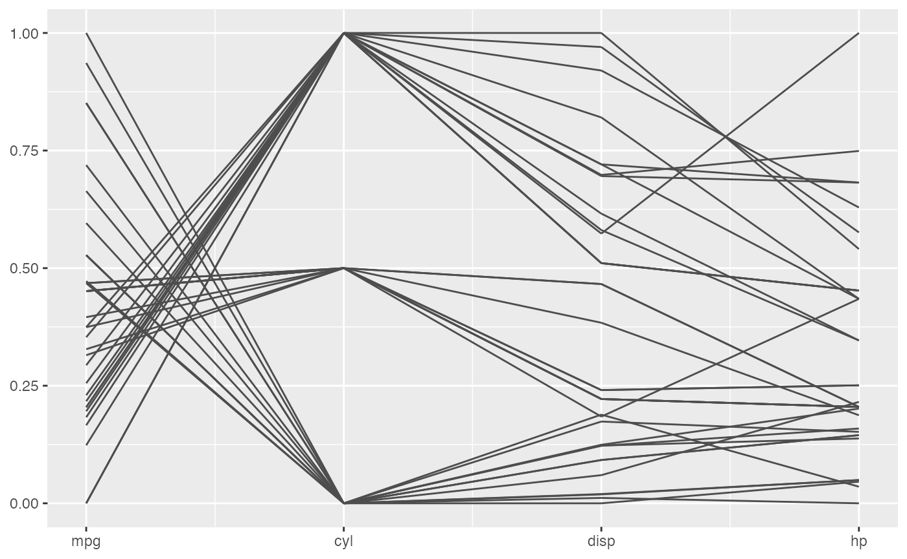
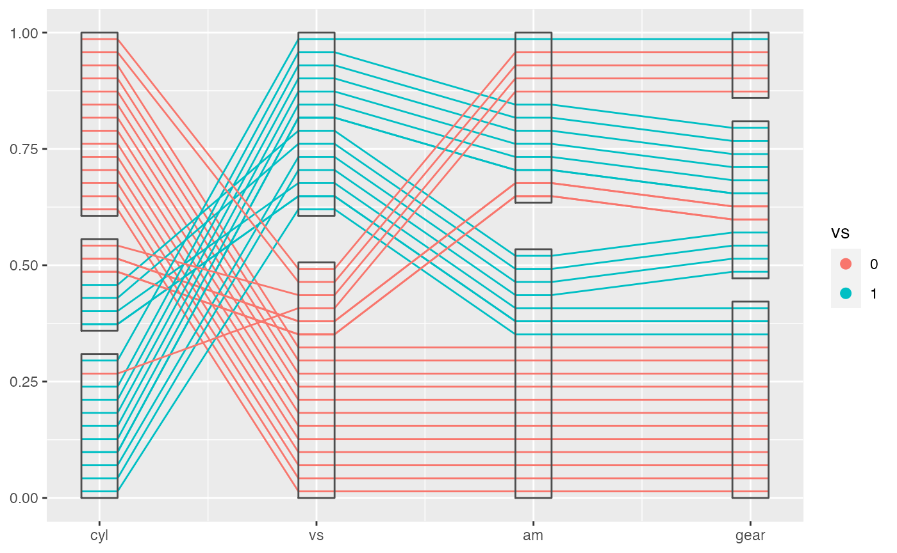
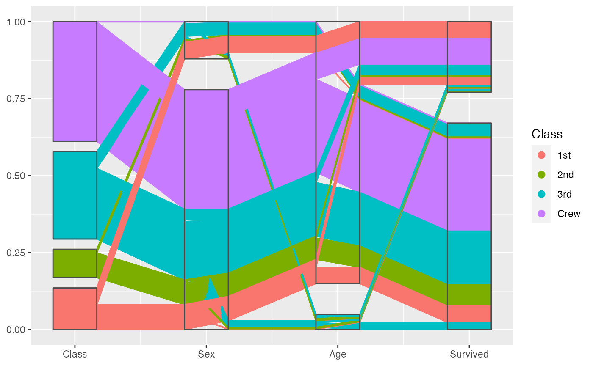
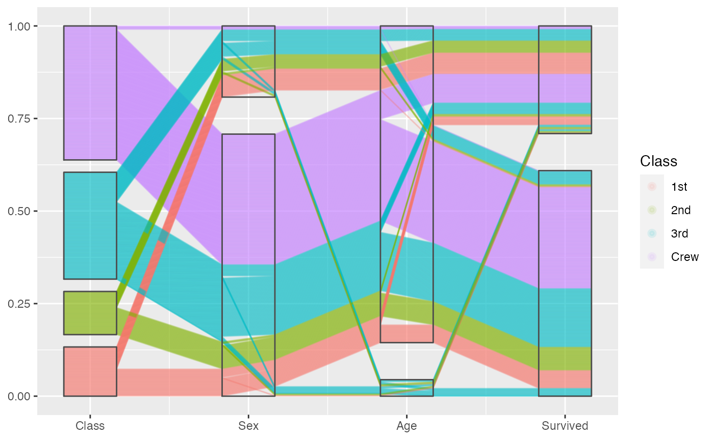

Introduction to ggpcp
ggpcp.RmdThis document shows how to make use of ggpcp functionalities with ggplot2 to draw an ideal parallel coordinate plot with numeric variables, categorical vairables or both. It provides a set of tools to deal with various cases and provides a good solution to draw factor variables.
library(ggplot2)
#> Warning: package 'ggplot2' was built under R version 4.0.2
library(dplyr)
#> Warning: package 'dplyr' was built under R version 4.0.2
library(ggpcp)
library(purrr)Start from the new interface
ggpcp is based on ggplot2 frame work, so we have to provide a set of aesthetics when we draw a parallal coordinate plot, which also varies depending on which and how many variables you want to show on the plot. We simplified this work for you and provided a new interface that works well with tidy evaluation, which is a method used by dplyr. You can select the variables you want by:
- position:
1:4,c(1, 3, 7) - name:
mpg,cyl,mpg:cyl,sex,age - selector:
start_with("male"), see?tidyselect::select_helpers
An example:
data(mtcars)
mtcars %>%
ggplot(aes(vars = vars(mpg:hp))) +
geom_pcp()
mtcars %>%
ggplot(aes(vars = vars(mpg, cyl, disp, hp))) +
geom_pcp()
mtcars %>%
ggplot(aes(vars = vars(1:4))) +
geom_pcp()Notice that we used the new interface: an new aesthetics which is called vars and accepts the selection expression wrapped by function vars(). And the above three calls are exactly the same.
The basic plot with geom_pcp()
The basic function or the main function of ggpcp is geom_pcp(), which will draw lines for parallel coordinate plot and deal with factor variables automatically by spreading them evenly on y-axis, in which case you can easily track the observations in these plot. And it is very powerful when there are a sequence of factor variables.
mtcars %>%
head()
#> mpg cyl disp hp drat wt qsec vs am gear carb
#> Mazda RX4 21.0 6 160 110 3.90 2.620 16.46 0 1 4 4
#> Mazda RX4 Wag 21.0 6 160 110 3.90 2.875 17.02 0 1 4 4
#> Datsun 710 22.8 4 108 93 3.85 2.320 18.61 1 1 4 1
#> Hornet 4 Drive 21.4 6 258 110 3.08 3.215 19.44 1 0 3 1
#> Hornet Sportabout 18.7 8 360 175 3.15 3.440 17.02 0 0 3 2
#> Valiant 18.1 6 225 105 2.76 3.460 20.22 1 0 3 1
We can see from the plot above, the second variable is actually a categorical one. So we can treat it as a factor variable to get a better plot. Add some color according to that too.
This is an extremely powerful functionality when it is used to deal with a sequence of factor variables.
mtcars %>%
mutate(vs = factor(vs),
am = factor(am),
gear = factor(gear),
carb = factor(carb)) %>%
ggplot(aes(vars = vars(vs:carb))) +
geom_pcp(aes(color = vs))
Decorate the plot with geom_pcp_box(), geom_pcp_text()
To show the levels of factor variables better, you can use geom_pcp_box(), which is used to draw boxes for the levels. We can see from the following example.
mtcars %>%
mutate(vs = factor(vs),
am = factor(am),
gear = factor(gear),
carb = factor(carb)) %>%
ggplot(aes(vars = vars(vs:carb))) +
geom_pcp(aes(color = vs)) +
geom_pcp_box()
If you want to see the boxes not black segments, you need to provide another argument: boxwidth to, unfortunately, both layer functions.
mtcars %>%
mutate(vs = factor(vs),
am = factor(am),
gear = factor(gear),
carb = factor(carb)) %>%
ggplot(aes(vars = vars(vs:carb))) +
geom_pcp(aes(color = vs), boxwidth = 0.2) +
geom_pcp_box(boxwidth = 0.2)
Add labels on top of boxes with geom_pcp_text() or geom_pcp_label().
mtcars %>%
mutate(vs = factor(vs),
am = factor(am),
gear = factor(gear),
carb = factor(carb)) %>%
ggplot(aes(vars = vars(vs:carb))) +
geom_pcp(aes(color = vs), boxwidth = 0.2) +
geom_pcp_box(boxwidth = 0.2) +
geom_pcp_text(boxwidth = 0.2)
mtcars %>%
mutate(vs = factor(vs),
am = factor(am),
gear = factor(gear),
carb = factor(carb)) %>%
ggplot(aes(vars = vars(vs:carb))) +
geom_pcp(aes(color = vs), boxwidth = 0.2) +
geom_pcp_box(boxwidth = 0.2) +
geom_pcp_label(boxwidth = 0.2)
Draw bands with geom_pcp_band()
You can also draw bands with geom_pcp_band(). This can adds a layer to lines or boxes to compose a more meaningful plot sometimes. It’s also interesting to see how bands are overdrawn.
mtcars %>%
mutate(vs = factor(vs),
am = factor(am),
gear = factor(gear),
carb = factor(carb)) %>%
ggplot(aes(vars = vars(vs:carb))) +
geom_pcp(aes(color = vs), boxwidth = 0.2) +
geom_pcp_box(boxwidth = 0.2) +
geom_pcp_band(aes(fill = vs), boxwidth = 0.2, alpha = 0.3) +
geom_pcp_label(boxwidth = 0.2)
Sometimes smaller bands are merged to a larger band, which is meaningful in showing a tidy plot, but will make it more difficult to color the bands. So we provide an argument to control this behavior. When you turn on the merge, the color/fill aesthetics is not reliable because geom_pcp_band will use the first observation in the merged band to color the whole band.
mtcars %>%
mutate(vs = factor(vs),
am = factor(am),
gear = factor(gear),
carb = factor(carb)) %>%
ggplot(aes(vars = vars(vs:carb))) +
geom_pcp(aes(color = vs), boxwidth = 0.2) +
geom_pcp_box(boxwidth = 0.2) +
geom_pcp_band(fill = "blue", boxwidth = 0.2, alpha = 0.3, merge = TRUE) +
geom_pcp_label(boxwidth = 0.2) Methods with data transformation
In most cases, you will need to scale your data in a proper way to best show them in a parallel coordinate plot. ggpcp provides several ways to do scaling as listed below. Note that factor variables are drawn in the range from 0 to 1, so you will want to scale the numeric variables to that magnitude when showing them with factor variables. By setting the method argument, you can call different methods:
- “raw”: no scaling
- “std”: univariately, subtract mean and divide by standard deviation
- “robust”: univariately, subtract median and divide by median absolute deviation
- “uniminmax”: univariately, scale so the minimum of the variable is zero, and the maximum is one
- “globalminmax”: gobal scaling, the global maximum is mapped to one, global minimum across the variables is mapped to zero

Adjust boxwidth, rugwidth and interwidth
ggpcp also provides ways to modify the parallel coordinate plot according to your need:
-
boxwidth: adjust the width of boxes (for factor variables) -
rugwidth: adjust the width of rugs (for numeric variables) -
interwidth: adjust the distance between every two adjacent variables
These arguments accept a scalar or a vector with equal length of the objects they control. Just be careful that in most cases, you will need to provide those arguments multiple times, if you use multiple layer functions.
mtcars %>%
mutate(am = factor(am),
gear = factor(gear),
carb = factor(carb)) %>%
ggplot(aes(vars = vars(mpg, am:carb))) +
geom_pcp(aes(color = mpg), boxwidth = 0.2, rugwidth = 0.2, interwidth = c(1, 1.5, 1)) +
geom_pcp_box(boxwidth = 0.2, rugwidth = 0.2, interwidth = c(1, 1.5, 1))
Break the factor block
Our default method works great for a sequence of factor variables, but as the number of factor variables increases, it becomes messier at the right side of the factor block, because the number of combinations of levels of variables increases. This is a conceptual difficulty which makes it hard to show the pattern of the data in these cases.
mtcars %>%
mutate(cyl = factor(cyl),
vs = factor(vs),
am = factor(am),
gear = factor(gear)) %>%
ggplot(aes(vars = vars(cyl, vs:gear))) +
geom_pcp(aes(color = vs), boxwidth = 0.2) +
geom_pcp_box(boxwidth = 0.2)
We provide a argument to partly sovle this problem. By making use of resort in geom_pcp(), we can actually break a factor block to two or more smaller parts, which will better show the relations between the adjacent variables while keeping tracking of individual observations. And notice that the adjustments happen in boxes and the main parts are kept tidy. This is a powerful tool, which deserves more investigations and deeper understandings.
mtcars %>%
mutate(cyl = factor(cyl),
vs = factor(vs),
am = factor(am),
gear = factor(gear)) %>%
ggplot(aes(vars = vars(cyl, vs:gear))) +
geom_pcp(aes(color = vs), boxwidth = 0.2, resort = 2:3) +
geom_pcp_box(boxwidth = 0.2)
Methods with overplotting
When you are dealing with a relatively large data set, the overplotting of lines from geom_pcp can be a problem. Note that the lines from geom_pcp are drawn according to the order they shown in your data set. So when the order changes in your data set the overdrawing pattern will also change. It can be messy and really annoying. We provided some overplotting methods to solve that, by setting the argument overplot to:
“original”: use the original order, first shown first drawn.
“hierarchical”: hierarchically drawn according to the combinations of levels of factor variables, which will change according to different level structures of factor variables you provided. This was done separately for each factor block. The right most factor variables have the largest weight across a sequence of factor variables, the last level of a factor variable has the largest weight within a factor variable. Groups of lines with larger weight will be drawn on top.
“smallfirst”: smaller groups of lines are drawn first, placing large groups of lines on top.
“largefirst”: larger groups of lines are drawn first, placing small groups of lines on top.
And you should also make use of transparency to show the overplotting better.
Examples from Titanic, look closely to the overplotting:
titanic <- as.data.frame(Titanic)
titanic <- titanic %>%
purrr::map(.f = function(x) rep(x, titanic$Freq)) %>%
as.data.frame() %>% select(-Freq)
set.seed(20190818)
titanic[c(sample(1:1000, 1000), 1001:2000), ] %>%
ggplot(aes(vars = vars(1:4))) +
geom_pcp(aes(colour = Class), resort=2:3, boxwidth = 0.5, overplot = "original") +
geom_pcp_box(boxwidth = 0.5)
titanic %>%
ggplot(aes(vars = vars(1:4))) +
geom_pcp(aes(colour = Class), alpha = 0.1, resort=2:3, boxwidth = 0.5, overplot = "largefirst") +
geom_pcp_box(boxwidth = 0.5)
titanic %>%
ggplot(aes(vars = vars(1:4))) +
geom_pcp(aes(colour = Class), alpha = 0.1, resort=2:3, boxwidth = 0.5, overplot = "hierarchical") +
geom_pcp_box(boxwidth = 0.5)